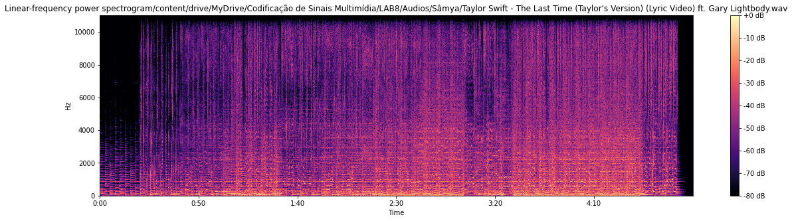
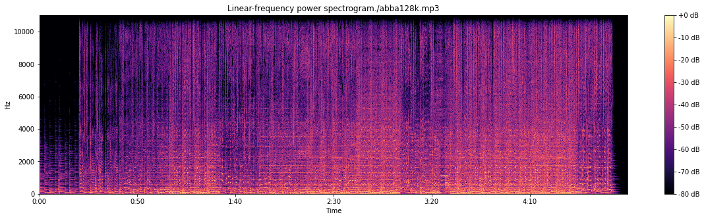
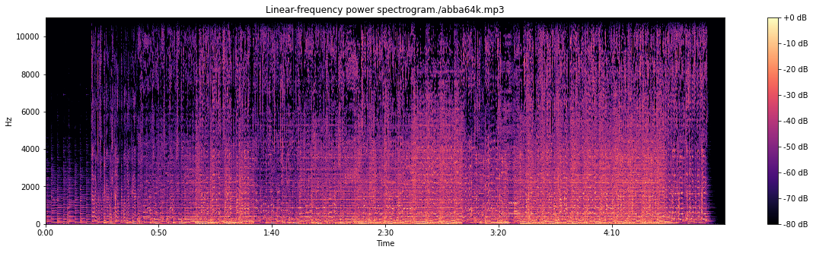
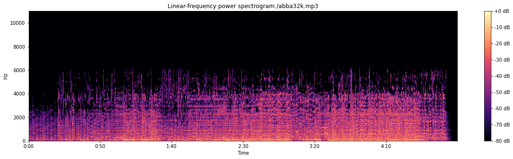
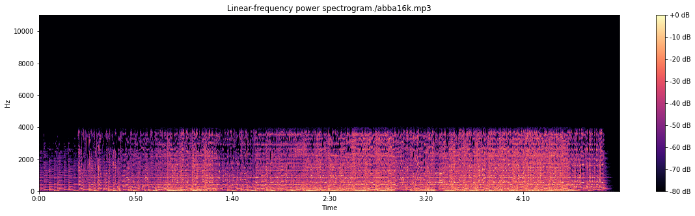
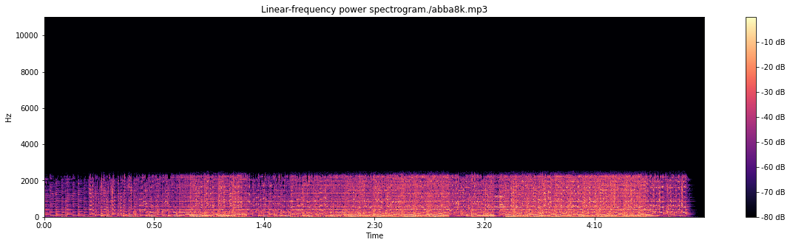

Codificação de Áudio com ffmpeg
Codificação de Sinais Multimídia - Laboratório 8
Primeiramente, os trabalhos com o Google Colab foram iniciados. Entre os principais objetivos temos: Conhecer as opções de codificação do ffmpeg; verificar várias taxas mpeg 1, camada 3 e conversão entre codecs; Variação de tempo.
Sâmya
Arquivo de Áudio Utilizado - "The Last Time"
Espectrograma Original

Opções do ffmpeg
Para esta seção, ocorreu a conversão wav em mp3. Na sequência, obtivemos para diferentes taxas, os espectrogramas do arquivo codificado.
Espectrograma do Arquivo codificado - 128kbps

Espectrograma do Arquivo codificado - 64kbps

Espectrograma do Arquivo codificado - 32k

Espectrograma do Arquivo codificado - 16k

Espectrograma do Arquivo codificado - 8k
